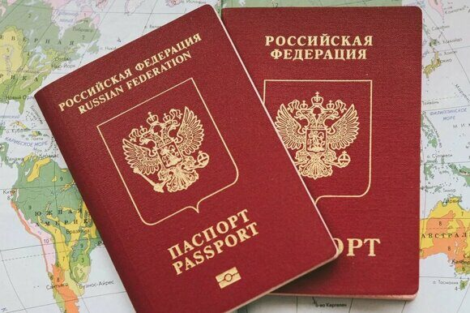

« Назад
Зачем нужен второй загранпаспорт? Разбираемся в деталях

В современном мире, полном путешествий, деловых поездок и международных связей, наличие одного загранпаспорта может оказаться недостаточным. Ситуации, требующие срочного выезда за границу, посещение стран с напряженными отношениями или просто необходимость разделения деловых и личных поездок – все это подталкивает к вопросу о возможности владения двумя загранпаспортами. Зачастую возникает путаница: можно ли иметь два действующих загранпаспорта в России одновременно? Ответ – да, это возможно, но с определенными условиями и нюансами, которые необходимо учитывать. Данная статья подробно рассмотрит все аспекты получения и использования второго загранпаспорта гражданами России.
Зачем нужен второй загранпаспорт?
Второй загранпаспорт – это не роскошь, а в некоторых случаях настоящая необходимость. Его наличие значительно упрощает жизнь и решает ряд проблем, с которыми может столкнуться путешественник или командировочный. Основные причины, по которым россияне оформляют второй загранпаспорт:
Частые командировки и путешествия
Если вы часто выезжаете за границу, один паспорт может быстро заполниться визами и пограничными штампами. Второй паспорт позволит избежать ситуации, когда место для штампов закончилось, а предстоит срочная поездка. Это особенно актуально для тех, кто работает в международных компаниях или часто путешествует по работе и отдыху.
Конфликтующие страны
Посещение стран, находящихся в сложных отношениях с с другими странами, может вызвать проблемы при пересечении границ других государств. Пограничники многих стран тщательно изучают историю поездок заявителя, и наличие штампа о посещении «нежелательной» страны может привести к отказу во въезде или длительным проверкам. Второй загранпаспорт позволяет разделить историю поездок, снижая риски возникновения подобных ситуаций. В один паспорт можно вносить визы и штампы стран, с которыми нет проблем, в другой – страны, вызывающие вопросы у других государств.
Получение визы
Процедура оформления визы в некоторые страны может занять значительное время. Если вам необходима срочная поездка, а виза еще не готова, второй загранпаспорт позволит избежать задержки. Вы можете использовать один паспорт для оформления визы, а другой – для непосредственного путешествия.
Заполненность паспорта
Как уже упоминалось, ограниченное количество страниц для виз и штампов в загранпаспорте – одна из главных причин для оформления второго паспорта. Заполнение паспорта штампами может затруднить получение новых виз или вызвать подозрения у пограничников.
Разделение личных и деловых поездок
Многие предпочитают разделять историю поездок в личных и деловых целях. Это позволяет структурировать информацию и упрощает процесс предоставления документов для различных целей.
Что дает второй загранпаспорт?
Второй загранпаспорт не является дубликатом первого. Это самостоятельный документ со своим индивидуальным номером, сроком действия и всей необходимой информацией. Он обладает такой же юридической силой, как и первый паспорт. Вы можете использовать его параллельно с действующим заграничным паспортом. Важно отметить, что второй паспорт должен быть нового образца – биометрическим, со сроком действия десять лет.
Особенности второго загранпаспорта
Биометрический
Второй загранпаспорт обязательно должен быть биометрическим (с электронным носителем информации и микрочипом). Небиометрические паспорта не допускаются в качестве второго документа.
Срок действия
Срок действия второго паспорта составляет 10 лет, как и у первого биометрического паспорта.
Заявление
При подаче заявления на получение второго паспорта необходимо четко указать, что вы получаете его в дополнение к уже действующему. Если этого не сделать, второй паспорт автоматически заменит первый, который будет аннулирован.
Информация о детях
Во второй загранпаспорт не вносится информация о детях. Для каждого ребенка необходимо оформлять отдельный загранпаспорт.
Использование
Второй загранпаспорт можно использовать для любых целей – командировок, туристических поездок, частных визитов.
Как оформить второй загранпаспорт
В России правовое регулирование оформления заграничных паспортов осуществляется Федеральным законом от 15.08.1996 N 114-ФЗ "О порядке выезда из Российской Федерации и въезда в Российскую Федерацию" и иными нормативными актами. Закон не запрещает владение гражданином РФ двумя загранпаспортами, однако не содержит прямого указания на процедуру их получения. На практике, оформление второго паспорта производится по той же процедуре, что и первого.
Процедура оформления второго заграничного паспорта
Процедура получения второго паспорта практически идентична процедуре получения первого и включает следующие этапы:
1. Сбор необходимых документов:
- Заявление: Заполняется по установленной форме (можно заполнить онлайн на портале Госуслуг).
- Фотографии: 2-4 фотографии установленного образца (цветные, матовые, 35х45 мм).
- Паспорт гражданина РФ: Оригинал и копия.
- Прежний загранпаспорт: Оригинал и копия (если срок действия не истек).
- Квитанция об оплате госпошлины: Размер госпошлины за оформление заграничного паспорта нового поколения (биометрического) составляет 6000 рублей, за паспорт старого образца - 2000 рублей. Оплату можно произвести через портал Госуслуг или в любом банке.
- Дополнительные документы: В зависимости от ситуации могут потребоваться дополнительные документы, например, военный билет (для мужчин призывного возраста).
2. Подача документов:
- Лично: Документы можно подать лично в территориальное подразделение ГУВМ МВД России по месту регистрации или пребывания.
- Через портал Госуслуг: Это наиболее удобный и быстрый способ. Подача заявления онлайн позволяет сократить время ожидания и избежать очередей.
- Через МФЦ: В некоторых регионах России оформление загранпаспорта возможно через Многофункциональные центры предоставления государственных и муниципальных услуг (МФЦ).
3. Рассмотрение заявления:
Срок рассмотрения заявления составляет от одного до трех месяцев. Срок зависит от загруженности подразделения ГУВМ МВД России и выбранного типа паспорта.
4. Получение паспорта:
- После готовности паспорта вас уведомят способом, указанным в заявлении (SMS, email).
- Паспорт необходимо получить лично, предъявив документ, удостоверяющий личность.
Советы и рекомендации по оформлению загранпаспорта
- Заранее планируйте: На оформление паспорта требуется время, поэтому начинайте подготовку заранее, особенно если планируете поездку в ближайшее время.
- Используйте портал Госуслуг: Онлайн-запись и подача документов значительно ускоряют процесс.
- Проверьте правильность заполнения документов: Ошибки в заявлении могут привести к задержкам в оформлении.
- Сделайте копии всех документов: Это поможет избежать проблем в случае утраты оригиналов.
- Сохраните квитанцию об оплате госпошлины: Она может потребоваться при получении паспорта.
- Уточняйте информацию в ГУВМ МВД России: Требования к документам и сроки оформления могут меняться, поэтому лучше уточнить актуальную информацию в вашем территориальном отделении.
- Обратите внимание на срок действия: Задумайтесь о необходимости оформления второго паспорта заранее, чтобы избежать ситуации, когда срок действия одного из паспортов истекает в период вашей поездки.
Возможные проблемы и их решение
- Отказ в выдаче паспорта: Отказ в выдаче паспорта возможен, если у заявителя есть не погашенные судимости, задолженности по налогам или другие обстоятельства, препятствующие выезду за рубеж. В случае отказа, необходимо разобраться в причинах и устранить препятствия.
- Задержка в оформлении: Задержки могут быть связаны с большой загруженностью подразделения ГУВМ МВД России, ошибками в документах или техническими проблемами. В случае задержки необходимо обратиться в территориальное отделение ГУВМ МВД России для уточнения информации.
- Утрата паспорта: В случае утраты паспорта необходимо немедленно обратиться в соответствующие органы (посольство, консульство) для получения помощи. Наличие второго паспорта значительно упрощает эту процедуру.
Можно ли оформить второй загранпаспорт при наличии действующего?
Да, вы можете получить второй загранпаспорт, даже если ваш первый паспорт еще действителен. Первый паспорт при этом не изымается. Вы будете иметь два действующих загранпаспорта одновременно.
Можно ли подать заявление на второй загранпаспорт и не приносить с собой первый?
Да, для оформления второго паспорта не требуется предоставлять первый паспорт. Процедура оформления ничем не отличается от получения первого загранпаспорта. Сроки действия двух паспортов никак не связаны. Но в анкете данные первого загранпаспорта указать стоит.
Важные нюансы
Количество паспортов
Гражданин Российской Федерации может иметь два загранпаспорта одновременно. Получение третьего паспорта возможно только после аннулирования одного из имеющихся.
Отсутствие дублирования
Второй загранпаспорт – это не копия первого. Он имеет свой собственный номер и историю поездок.
Необходимость биометрии
Второй паспорт может быть только биометрическим, а не старого образца.
Рекомендации и советы
- Перед подачей заявления на второй загранпаспорт внимательно изучите все необходимые документы и требования.
- Своевременно подавайте заявку, чтобы избежать задержек.
- Аккуратно храните оба паспорта, так как потеря любого из них может создать значительные проблемы.
- Заранее планируйте свои поездки, чтобы избежать ситуации, когда один из паспортов заполнен, а другой не готов.
Заключение
Получение второго загранпаспорта – вполне законная и в ряде случаев необходимая процедура для граждан России. Наличие двух действующих паспортов значительно упрощает жизнь тем, кто часто путешествует или сталкивается с трудностями при пересечении границ. Однако, необходимо помнить о нюансах оформления и использования второго паспорта, таких как его обязательная биометричность и невозможность внесения информации о детях. Внимательное изучение всех требований и своевременная подача заявления помогут избежать неприятных ситуаций и обеспечат беспрепятственные путешествия. Надеемся, что данная статья предоставила исчерпывающую информацию о возможности и порядке получения второго загранпаспорта в России.
Нужен срочно второй загранпаспорт? Паспортно-визовый центр «Север» поможет!
Вам необходимо быстро получить второй заграничный паспорт, а времени в обрез? Паспортно-визовый центр «Север» предлагает услугу срочного оформления второго загранпаспорта. Мы работаем на рынке более 20 лет и зарекомендовали себя как надежный и эффективный партнер. Расположенные в самом центре Москвы, мы обеспечиваем удобный доступ и оперативное решение вашей задачи.
Что мы предлагаем:
- Срочное оформление второго загранпаспорта: Мы поможем вам минимизировать время ожидания, взяв на себя все хлопоты по сбору документов и взаимодействию с государственными органами. Срок оформления зависит от конкретной ситуации и необходимых документов, но мы стремимся к максимально быстрой обработке вашего запроса.
- Полный контроль: Наши специалисты проконсультируют вас по всем вопросам, связанным с оформлением второго загранпаспорта, помогут собрать необходимый пакет документов и предоставят полную информацию о ходе процесса.
- Удобное расположение: Наш центр находится в центре Москвы, что позволит вам сэкономить время на дорогу. Точный адрес вы можете уточнить по телефону.
- Профессионализм и опыт: Более 20 лет работы в сфере оформления документов гарантируют высокое качество наших услуг и успешное решение вашей задачи.
- Индивидуальный подход: Мы понимаем, что каждый клиент уникален, и поэтому предлагаем индивидуальный подход к каждому заказу, учитывая все ваши особенности и требования.
Свяжитесь с нами прямо сейчас:
Позвоните нам по телефону +79255854195 и получите бесплатную консультацию. Наши специалисты ответят на все ваши вопросы и помогут определить оптимальный вариант оформления второго загранпаспорта с учетом ваших сроков и потребностей.
Не откладывайте на потом! Обращайтесь в Паспортно-визовый центр «Север» – и мы поможем вам получить второй загранпаспорт быстро и без лишних хлопот!
|